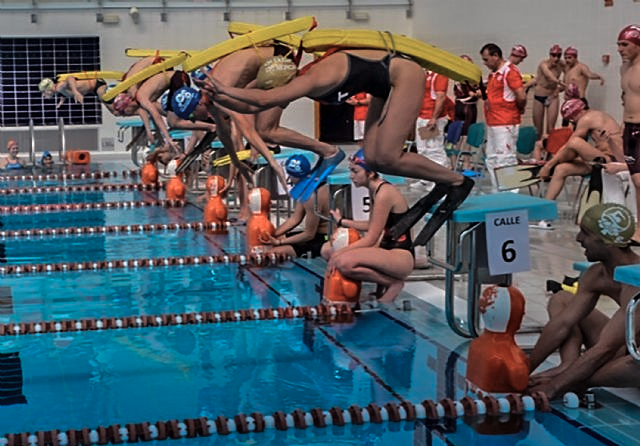

Salida de competición
La energía del equipo antes de lanzarse al agua.
Imágenes, publicaciones y momentos que cuentan el día a día del club.
Una primera galería con recursos ya disponibles. El archivo multimedia podrá crecer con fotografías de entrenamientos y competiciones.
La energía del equipo antes de lanzarse al agua.

Personas, compañerismo y trabajo compartido.

Salvamento y socorrismo como deporte educativo.
Aquí podremos organizar vídeos, álbumes, entrevistas y publicaciones destacadas.